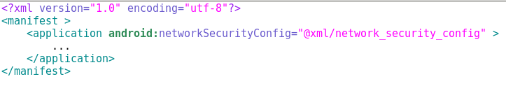
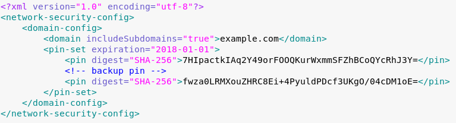
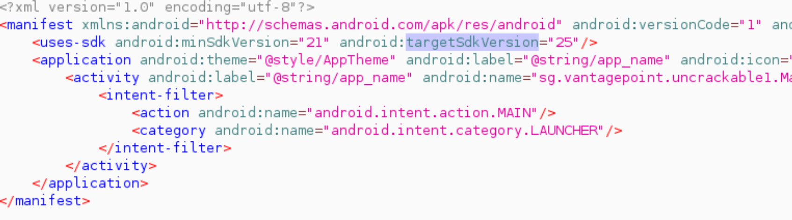
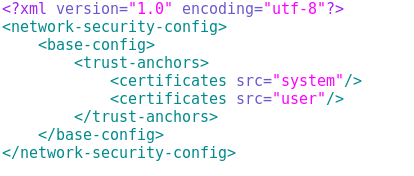
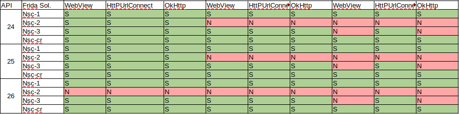
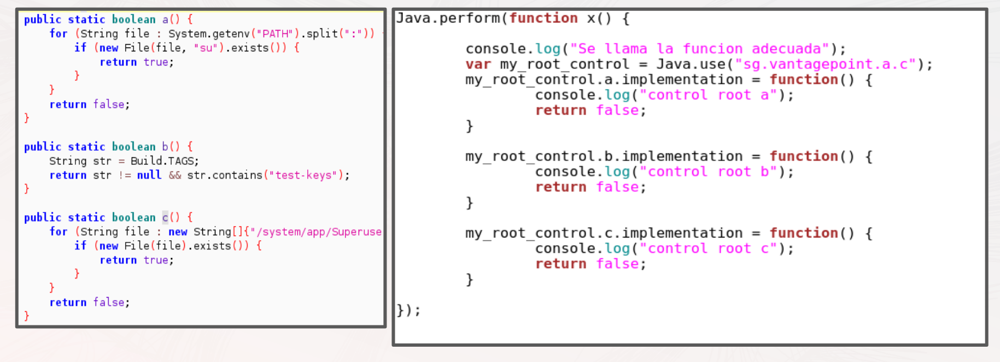

Creado por Cesar Rodriguez - @warlockk87
Descargar el server de Frida releases
Subir el server a un directorio con permisos de escritura
adb push frida-server-12.8.20-android-x86 /dataCambiar permisos a ejecucion:
adb shell chmod +x /data/frida-server-12.8.20-android-x86Correr el proceso:
adb shell
/data/frida-server-12.8.20-android-x86 &Comprobar que funiona (ver procesos corriendo del Android):
frida-ps -UFijarse que exista en la lista de procesos uno que se llama zygote
Usage: frida [options] target
Options:
-D ID, --device=ID connect to device with the given ID
-U, --usb connect to USB device
-R, --remote connect to remote frida-server
-H HOST, --host=HOST connect to remote frida-server on HOST
-f FILE, --file=FILE spawn FILE
-p PID, --attach-pid=PID
attach to PID
-l SCRIPT, --load=SCRIPT
load SCRIPT
-P PARAMETERS_JSON, --parameters=PARAMETERS_JSON
parameters as JSON, same as Gadget
-c CODESHARE_URI, --codeshare=CODESHARE_URI
load CODESHARE_URI
-e CODE, --eval=CODE evaluate CODE
-q quiet mode (no prompt) and quit after -l and -e
--no-pause automatically start main thread after startup
-o LOGFILE, --output=LOGFILE
output to log file
--exit-on-error exit with code 1 after encountering any exception in
the SCRIPT
ejemplo basico de API
Para instalar, parados en la carpeta root del git:
adb shell settings put global verifier_verify_adb_installs 0
adb install -t aplicaciones/basiccalculator.apk
Para que ese comando funcione se tiene que cumplir con las siguientes precondiciones:
El codigo fuente se encuentra en aplicaciones/BasicCalculator
package com.example.ritesh.mybasiccalculator_riteshbhat;
public class MainActivity extends AppCompatActivity implements View.OnClickListener {
private Integer add(int int1, int int2) {
return int1 + int2;
}
@Override
public void onClick(View view)
{
String num1=editText.getText().toString();
String num2=editText2.getText().toString();
this.findViewById()
switch(view.getId())
{
case R.id.button:
int mul= multiply(Integer.parseInt(num1), Integer.parseInt(num2));
editText3.setText(String.valueOf(mul));
break;
case R.id.button2:
int add= add(Integer.parseInt(num1), Integer.parseInt(num2));
editText3.setText(String.valueOf(add));
break;
case R.id.button3:
//frida -U --no-pause -f com.blog.mybasiccalculator_riteshbhat
//Java.perform se asegura que la funcion que se pasa, corre en el thread de la VM
Java.perform( function () {
//Java.use devuelve un objeto de javascript wrappeada en una clase cargada en la VM
var activity_class = Java.use("com.blog.basiccalculator.MainActivity");
//forma de sobreescribir un metodo de una clase (en este caso el metodo add de la clase
// MainActivity)
activity_class.add.implementation = function (int1, int2) {
//console.log muestra por pantalla lo que se pasa
console.log("[+] se llama add");
//this hace referencia al objeto del tipo MainActivity.
return this.add(int1,int2);
}
});
Se pueden modificar las funciones ya implementadas
Java.perform( function () {
var activity_class = Java.use("com.blog.basiccalculator.MainActivity");
activity_class.add.implementation = function (int1, int2) {
console.log("[+] se llama add 2");
return this.add(int1,int2); }
});
Modificar el comportamiento completo de la funcion
Java.perform( function () {
var activity_class = Java.use("com.blog.basiccalculator.MainActivity");
activity_class.add.implementation = function (p_int1, p_int2) {
return p_int1 - p_int2;
}
});
Probemos con el segundo caso
private Integer sub(int int1, int int2) {
return int1 - int2;
}
public void onClick(View view)
{
...
switch(view.getId())
{
case R.id.button3:
int sub=sub(Integer.parseInt(num1),Integer.parseInt(num2));
editText3.setText(String.valueOf(sub));
break;
Codigo para el patch de sub
Java.perform( function () {
var activity_class = Java.use("com.blog.basiccalculator.MainActivity");
activity_class.sub.implementation = function (p_int1, p_int2) {
return p_int1 + p_int2;
}
});
Probemos con la modificacion en base al error
Java.perform( function () {
var activity_class = Java.use("com.blog.basiccalculator.MainActivity");
activity_class.sub.implementation = function (p_int1, p_int2) {
var Integer = Java.use("java.lang.Integer");
//Usar operaciones de Integer para sumar. Primero se usa la funcion estatica sub que recibe dos int, en vez de Integer
return Integer.$new(p_int1 - p_int2);
}
});
Se presentan una nueva funcion dentro de la API de Frida:
Ejemplo de trackeo de funciones
public void BasicToast(View view)
{
Context context=getApplicationContext();
CharSequence text="Hello..This is toast..!!";
int duration= Toast.LENGTH_LONG;
Toast toast=Toast.makeText(context,text,duration);
toast.show();
}
Script para trackear una funcion
Java.perform( function() {
var activity_class = Java.use("com.blog.basiccalculator.MainActivity");
activity_class.BasicToast.implementation = function (view) {
Java.perform( function() {
var bt = Java.use("android.util.Log").getStackTraceString(Java.use("java.lang.Exception").$new());
console.log("\nBacktrace:\n" + bt);
});
this.BasicToast(view);
}
});
Se referencia un archivo en el AndroidManifest.xml:
Se agrega archivo res/xml/network_security_config.xml:
Modificar la version de android:targetSdkVersion.
Se puede modificar la configuracion de *network-security-config* o agregarla.
Se puede usar un script de Frida para hacer un patch.
// frida -U -l network-security-config-bypass.js --no-pause -f com.example.bypassnsc
Java.perform(function(){
var NetworkSecurityConfig_Builder =Java.use("android.security.net.config.NetworkSecurityConfig$Builder");
console.log("NetworkSecurityConfig_Builder: " + NetworkSecurityConfig_Builder);
var CertificatesEntryRef = Java.use("android.security.net.config.CertificatesEntryRef");
console.log("CertificatesEntryRef: " + CertificatesEntryRef);
var CertificateSource = Java.use("android.security.net.config.CertificateSource");
console.log("CertificateSource: " + CertificateSource);
var UserCertificateSource = Java.use("android.security.net.config.UserCertificateSource");
console.log("UserCertificateSource: " + UserCertificateSource);
NetworkSecurityConfig_Builder.getEffectiveCertificatesEntryRefs.implementation = function(){
console.log("entra");
var origin = this.getEffectiveCertificatesEntryRefs()
var source = UserCertificateSource.getInstance()
var userCert = CertificatesEntryRef.$new(source,true)
origin.add(userCert)
return origin
}
})
No todos los scripts funcionan siempre, hay que ver la version de la API inicialmente, y saber seleccionar cual conviene.
El siguiente grafico muetra un analisis de distintos scripts para distintas APIs y distintas versiones:
Para mas detalles ver Scripts de bypass de NSC
Para instalar, parados en la carpeta root del git:
adb shell settings put global verifier_verify_adb_installs 0
adb install -t aplicaciones/bypassnsc.apk
Para que ese comando funcione se tiene que cumplir con las siguientes precondiciones:
El codigo fuente se encuentra en aplicaciones/BypassNSC
Modo de validar el certificado entregado por el servidor.
Es mas complicado. Hay muchas formas de hacerlo, muchas custom made, por ejemplo:
Bypass OkHttp:
public boolean testOkHttp() {
String hostname = "example.org";
CertificatePinner certificatePinner = new CertificatePinner.Builder().add(hostname, "sha256/AAAAAAAAAAAAAAAAAAAAAAAAAAAAAAAAAAAAAAAAAAA=").build();
OkHttpClient client = new OkHttpClient.Builder().certificatePinner(certificatePinner).build();
Request request = new Request.Builder().url("https://" + hostname).build();
try {
client.newCall(request).execute();
exito = true;
} catch (IOException e) { e.printStackTrace(); }
return exito;
}
Java.perform(function () {
try {
var CertificatePinner = Java.use('okhttp3.CertificatePinner');
console.log("[+] OkHTTP 3.x Found");
CertificatePinner.check.overload('java.lang.String', 'java.util.List').implementation = function() {
console.log("[+] OkHTTP 3.x check() called. Not throwing an exception.");
};
} catch (err) {
console.log("[-] OkHTTP 3.x Not Found")
}
});
Como harian para bypasear lo siguiente?
@RequiresApi(api = Build.VERSION_CODES.JELLY_BEAN_MR1)
public boolean testHttpUrlConnection() {
HttpUrlConnectPinner httpUrlConnectPinner = new HttpUrlConnectPinner();
return httpUrlConnectPinner.testPinning();
}
public class HttpUrlConnectPinner {
@RequiresApi(api = Build.VERSION_CODES.JELLY_BEAN_MR1)
private void validatePinning(
X509TrustManagerExtensions trustManagerExt,
HttpsURLConnection conn, Set<String> validPins)
throws SSLException {
String certChainMsg = "";
try {
MessageDigest md = MessageDigest.getInstance("SHA-256");
...
} catch (NoSuchAlgorithmException e) {
throw new SSLException(e);
}
throw new SSLPeerUnverifiedException("Certificate pinning " +
"failure\n Peer certificate chain:\n" + certChainMsg);
}
@RequiresApi(api = Build.VERSION_CODES.JELLY_BEAN_MR1)
private List<X509Certificate> trustedChain(
X509TrustManagerExtensions trustManagerExt,
HttpsURLConnection conn) throws SSLException {
Certificate[] serverCerts = conn.getServerCertificates();
...
}
@RequiresApi(api = Build.VERSION_CODES.JELLY_BEAN_MR1)
public boolean testPinning() {
TrustManagerFactory trustManagerFactory =
null;
try {
trustManagerFactory = TrustManagerFactory.getInstance(
TrustManagerFactory.getDefaultAlgorithm());
...
}
return false;
}
}
Para instalar, parados en la carpeta root del git:
adb shell settings put global verifier_verify_adb_installs 0
adb install -t aplicaciones/testcertificate.apk
Para que ese comando funcione se tiene que cumplir con las siguientes precondiciones:
El codigo fuente se encuentra en aplicaciones/TestingCertificatePinning
Hay muchas soluciones custom-made porque la complejidad de desarrollo es baja
Para instalar, se puede descargar Google Play en RootBeer
El apk se puede descargar tambien desde RootBeer
El codigo de la aplicacion y la libreria se encuentra en el siguiente repositorio de github: RootBeer
Un libreria muy buena para detectar root se llama "rootber"
El siguiente codigo es sacado de la aplicacion de ejemplo que usa la libreria:
import com.scottyab.rootbeer.RootBeer;
...
RootBeer check = new RootBeer(mContext);
check.checkForNativeLibraryReadAccess();
check.setLogging(true);
...
case 24:
mIsCheck = check.detectTestKeys();
Log.d(TAG, "TestKeys " + (mIsCheck ? "detected" : "not detected"));
break;
El control de test keys que daba positivo se puede patchear de la siguiente forma:
Java.perform( function () {
var rootbeer = Java.use("com.scottyab.rootbeer.RootBeer");
rootbeer.detectTestKeys.implementation = function () {
console.log("Entra");
return false;
}
});
Veamos el siguiente control de root:
public class RootBeer {
public boolean checkForRootNative() {
...
RootBeerNative rootBeerNative = new RootBeerNative();
try {
rootBeerNative.setLogDebugMessages(loggingEnabled);
return rootBeerNative.checkForRoot(checkPaths) > 0;
} catch (UnsatisfiedLinkError e) {
return false;
}
}
}
public class RootBeerNative {
static {
try {
System.loadLibrary("tool-checker");
libraryLoaded = true;
...
public native int checkForRoot(Object[] pathArray);
public native int setLogDebugMessages(boolean logDebugMessages);
}
int Java_com_scottyab_rootbeer_RootBeerNative_checkForRoot( JNIEnv* env, jobject thiz, jobjectArray pathsArray )
{
int binariesFound = 0;
int stringCount = (env)->GetArrayLength(pathsArray);
for (int i=0; i<stringCount; i++) {
jstring string = (jstring) (env)->GetObjectArrayElement(pathsArray, i);
const char *pathString = (env)->GetStringUTFChars(string, 0);
binariesFound+=exists(pathString);
(env)->ReleaseStringUTFChars(string, pathString);
}
return binariesFound>0;
}
Interceptor.attach(Module.findExportByName("libtool-checker.so","Java_com_scottyab_rootbeer_RootBeerNative_checkForRoot"),{
onEnter: function(args) {
console.log("entra a la funcion");
},
onLeave: function(retval) {
console.log("sale de la funcion");
retval.replace(0);
}
});
Solucion a uncrackable Lvl 1 (Crackmes)
Se puede armar un fuzzer para Java o C rapidamente (black-box):
Existen fuzzers mas complejos:
Para instalar, se puede descargar Google Play en Pixel Dungeon
El apk se puede descargar tambien desde Pixel Dungeon
El codigo de la aplicacion y la libreria se encuentra en el siguiente repositorio de github: Pixel Dungeon
Listar las clases cargadas
Java.perform( function() {
var allClasses = [];
var classes = Java.enumerateLoadedClassesSync();
classes.forEach(function(aClass) {
if (aClass.startsWith("com.watabou")) {
console.log(aClass);
}
});
});
Listar metodos de una clase
var classItem = null;
var listMethods = function (className) {
Java.perform(function () {
var hook = Java.use(className);
var ownMethods = hook.class.getDeclaredMethods();
ownMethods.forEach(function (method) {
console.log(method);
});
hook.$dispose;
});
}
listMethods("com.watabou.pixeldungeon.actors.hero.Hero");
Listar campos de una clase
var listFields = function (className) {
Java.perform(function () {
var hook = Java.use(className);
var ownMethods = hook.class.getDeclaredFields();
ownMethods.forEach(function (method) {
console.log(method);
});
hook.$dispose;
});
}
listFields("com.watabou.pixeldungeon.actors.hero.Hero");
Chequear superclase
var checkSuperClass = function (className) {
Java.perform( function() {
var hook = Java.use(className);
console.log(hook.class.getSuperclass());
hook.$dispose;
});
}
checkSuperClass("com.watabou.pixeldungeon.actors.hero.Hero");
Listar contenido de heroe
Java.perform(function () {
Java.choose("com.watabou.pixeldungeon.actors.hero.Hero", {
onMatch: function (hero) {
console.log("Basic stats:");
console.log("level:" + hero.lvl.value);
console.log("exp:" + hero.exp.value);
console.log("STR STAT:" + hero._STR.value);
//cast a Char
var charClass = Java.use("com.watabou.pixeldungeon.actors.Char");
var charObj = Java.cast(hero,charClass);
console.log("HT STAT:" + charObj.HT.value);
console.log("HP STAT:" + charObj.HP.value);
console.log("Start restoring health:" + hero.restoreHealth.value);
console.log("Character is weakened:" + hero.weakened.value);
console.log("Awareness level:" + hero.awareness.value);
console.log("Derived stats:");
console.log("strength:" + hero.STR());
console.log("attack_skill:" + hero.attackSkill(hero));
console.log("defense_skill:" + hero.defenseSkill(hero));
console.log("defense rating:" + hero.dr());
//mostrar las cosas que tiene guardadas
var iterator = hero.belongings.bagpack.items.iterator();
var Item = Java.use("com.watabou.pixeldungeon.items.Item");
console.log("Items poseidos:");
while (iterator.hasNext()) {
var itemFromBag = iterator.next();
var castedItem = Java.cast(itemFromBag,Item);
console.log("-> " + castedItem.name + "(" + castedItem.quantity + ")");
}
},
onComplete: function () { }
}
});
});
Loguear acciones de heroe
var listFilteredMethods = function (className) {
var hook = Java.use(className);
var ownMethods = hook.class.getDeclaredMethods();
ownMethods.forEach(function (method) {
if (method.toString().includes("Hero.act")) {
console.log(method);
}
});
hook.$dispose;
}
Java.perform( function() {
listFilteredMethods("com.watabou.pixeldungeon.actors.hero.Hero");
});
Java.perform(function () {
var Hero = Java.use("com.watabou.pixeldungeon.actors.hero.Hero");
Hero.actAscend.implementation = function (ascend) {
console.log("Ascencion move");
console.log(Java.use("android.util.Log").getStackTraceString(Java.use("java.lang.Exception").$new()));
return this.actAscend(ascend);
}
Hero.actAttack.implementation = function (attack) {
console.log("Attack move");
console.log(Java.use("android.util.Log").getStackTraceString(Java.use("java.lang.Exception").$new()));
return this.actAttack(attack);
}
Hero.actBuy.implementation = function (buy) {
console.log("Buy move");
console.log(Java.use("android.util.Log").getStackTraceString(Java.use("java.lang.Exception").$new()));
return this.actBuy(buy);
}
Hero.actCook.implementation = function (cook) {
console.log("Cooking move");
console.log(Java.use("android.util.Log").getStackTraceString(Java.use("java.lang.Exception").$new()));
return this.actCook(cook);
}
Hero.actDescend.implementation = function (descend) {
console.log("Descend move");
console.log(Java.use("android.util.Log").getStackTraceString(Java.use("java.lang.Exception").$new()));
return this.actDescend(descend);
}
Hero.actInteract.implementation = function (interaction) {
console.log("Interaction move");
console.log(Java.use("android.util.Log").getStackTraceString(Java.use("java.lang.Exception").$new()));
return this.actInteract(interaction);
}
Hero.actMove.implementation = function (move) {
console.log("Movement move");
console.log(Java.use("android.util.Log").getStackTraceString(Java.use("java.lang.Exception").$new()));
return this.actMove(move);
}
Hero.actOpenChest.implementation = function (openChest) {
console.log("Open Chest move");
console.log(Java.use("android.util.Log").getStackTraceString(Java.use("java.lang.Exception").$new()));
return this.actOpenChest(openChest);
}
Hero.actPickUp.implementation = function (pickUp) {
console.log("Pick up move");
console.log(Java.use("android.util.Log").getStackTraceString(Java.use("java.lang.Exception").$new()));
return this.actPickUp(pickUp);
}
Hero.actUnlock.implementation = function (unlock) {
console.log("Ascencion move");
console.log(Java.use("android.util.Log").getStackTraceString(Java.use("java.lang.Exception").$new()));
return this.actUnlock(unlock);
}
});
Analisis del movimiento
1) Veo qué tiene HeroAction:
listFields("com.watabou.pixeldungeon.actors.hero.HeroAction$Move");
//no hay nada
listFields("com.watabou.pixeldungeon.actors.hero.HeroAction");
//hay un int dst. Vamos a probar si podemos imprimir esto desde la acción de moverse:
Java.perform( function() {
var Hero = Java.use("com.watabou.pixeldungeon.actors.hero.Hero");
Hero.actMove.implementation = function (move) {
console.log("Movement move");
console.log("dst->" + move.dst.value);
console.log(Java.use("android.util.Log").getStackTraceString(Java.use("java.lang.Exception").$new()));
return this.actMove(move);
}
});
2) Hacer un par de movimientos
Java.perform(function () {
Java.choose("com.watabou.pixeldungeon.actors.hero.Hero", {
onMatch: function (hero) {
console.log("position: " + hero.pos.value);
var Move = Java.use("com.watabou.pixeldungeon.actors.hero.HeroAction$Move");
var move = Move.$new(827);
hero.actMove(move);
},
onComplete: function () { }
});
});
Script para automatizar el movimiento
var moveUp = function () {
Java.perform(function () {
Java.choose("com.watabou.pixeldungeon.actors.hero.Hero", {
onMatch: function (hero) {
var posActual = hero.pos.value;
var Move = Java.use("com.watabou.pixeldungeon.actors.hero.HeroAction$Move");
if (posActual >= 32) {
var move = Move.$new(hero.pos.value -32);
hero.actMove(move);
}
},
onComplete: function () { }
});
});
}
var moveDown = function () {
Java.perform(function () {
Java.choose("com.watabou.pixeldungeon.actors.hero.Hero", {
onMatch: function (hero) {
var posActual = hero.pos.value;
var Move = Java.use("com.watabou.pixeldungeon.actors.hero.HeroAction$Move");
var move = Move.$new(hero.pos.value +32);
hero.actMove(move);
},
onComplete: function () { }
});
});
}
var moveLeft = function () {
Java.perform(function () {
Java.choose("com.watabou.pixeldungeon.actors.hero.Hero", {
onMatch: function (hero) {
var posActual = hero.pos.value;
var Move = Java.use("com.watabou.pixeldungeon.actors.hero.HeroAction$Move");
var move = Move.$new(hero.pos.value -1);
hero.actMove(move);
},
onComplete: function () { }
});
});
}
var moveRight = function () {
Java.perform(function () {
Java.choose("com.watabou.pixeldungeon.actors.hero.Hero", {
onMatch: function (hero) {
var posActual = hero.pos.value;
var Move = Java.use("com.watabou.pixeldungeon.actors.hero.HeroAction$Move");
var move = Move.$new(hero.pos.value +1);
hero.actMove(move);
},
onComplete: function () { }
});
});
}
Mejora del script anterior
var referenceHero = null;
var getHeroReference = function () {
Java.perform(function () {
Java.choose("com.watabou.pixeldungeon.actors.hero.Hero", {
onMatch: function (hero) {
console.log(hero);
referenceHero = hero;
},
onComplete: function () { }
});
});
}
var moveRight = function () {
Java.perform(function () {
var posActual = referenceHero.pos.value;
var Move = Java.use("com.watabou.pixeldungeon.actors.hero.HeroAction$Move");
var move = Move.$new(referenceHero.pos.value +1);
referenceHero.actMove(move);
});
}
var moveLeft = function () {
Java.perform(function () {
var posActual = referenceHero.pos.value;
var Move = Java.use("com.watabou.pixeldungeon.actors.hero.HeroAction$Move");
var move = Move.$new(referenceHero.pos.value -1);
referenceHero.actMove(move);
});
}
var moveDown = function () {
Java.perform(function () {
var posActual = referenceHero.pos.value;
var Move = Java.use("com.watabou.pixeldungeon.actors.hero.HeroAction$Move");
var move = Move.$new(referenceHero.pos.value +32);
referenceHero.actMove(move);
});
}
var moveUp = function () {
Java.perform(function () {
var posActual = referenceHero.pos.value;
var Move = Java.use("com.watabou.pixeldungeon.actors.hero.HeroAction$Move");
var move = Move.$new(referenceHero.pos.value -32);
referenceHero.actMove(move);
});
}
Cheat time
Java.perform(function () {
Char = Java.use("com.watabou.pixeldungeon.actors.Char");
Java.choose("com.watabou.pixeldungeon.actors.hero.Hero", {
onMatch: function (hero) {
var char = Java.cast(hero,Char);
console.log(char.HP.value);
console.log(char.HT.value); //este debe ser el total
},
onComplete: function () { }
});
});
//full HP
Java.perform(function () {
Char = Java.use("com.watabou.pixeldungeon.actors.Char");
Java.choose("com.watabou.pixeldungeon.actors.hero.Hero", {
onMatch: function (hero) {
var char = Java.cast(hero,Char);
char.HP.value = 25;
},
onComplete: function () { }
});
});
//TRUE DAMAGE
Java.perform(function () {
Java.choose("com.watabou.pixeldungeon.actors.hero.Hero", {
onMatch: function (hero) {
var Mob = Java.use("com.watabou.pixeldungeon.actors.mobs.Mob");
var Char = Java.use("com.watabou.pixeldungeon.actors.Char");
var iterator = hero._visibleEnemies.value.iterator();
while (iterator.hasNext()) {
var enemyMob = iterator.next();
var theMob = Java.cast(enemyMob,Mob);
var theChar = Java.cast(enemyMob,Char);
theChar.damage(1, theChar);
console.log(theMob.$className);
console.log(theChar.HP.value);
}
},
onComplete: function () { }
});
});
Java.perform(function () {
Char = Java.use("com.watabou.pixeldungeon.actors.Char");
Java.choose("com.watabou.pixeldungeon.actors.hero.Hero", {
onMatch: function (hero) {
hero.STR.value = 25;
},
onComplete: function () { }
});
});
//open any chest
Java.perform( function () {
Java.choose("com.watabou.pixeldungeon.actors.hero.Hero", {
onMatch: function (hero) {
var Heap = Java.use("com.watabou.pixeldungeon.items.Heap");
var Dungeon = Java.use("com.watabou.pixeldungeon.Dungeon");
var genericHeap = Dungeon.level.value.heaps.value.get( 92 );
var heap = Java.cast(genericHeap, Heap);
heap.open(hero);
},
onComplete: function () { }
});
});
var isBadBuff = function (className) {
if (className.includes('Satiety')) return true;
if (className.includes('Haste')) return true;
return false;
}
//remove bad buffers
Java.perform( function () {
Java.choose("com.watabou.pixeldungeon.actors.hero.Hero", {
onMatch: function (hero) {
var Char = Java.use("com.watabou.pixeldungeon.actors.Char");
var character = Java.cast(hero,Char);
var iterator = character._buffs.value.iterator();
var buffToRemove = new Array();
while (iterator.hasNext()) {
var buff = iterator.next();
if (isBadBuff(buff.$className)) {
buffToRemove.push(buff);
}
console.log(buff.$className);
}
for (var i = 0; i < buffToRemove.length; i++) {
character._buffs.value.remove(buffToRemove[i]);
}
},
onComplete: function () { }
});
});
Java.perform(function () {
var Hunger = Java.use("com.watabou.pixeldungeon.actors.buffs.Hunger");
Hunger.isStarving.implementation = function () {
return false;
}
});
Java.perform( function () {
var Heap = Java.use("com.watabou.pixeldungeon.items.Heap");
var Dungeon = Java.use("com.watabou.pixeldungeon.Dungeon");
var genericHeap = Dungeon.level.value.heaps.value.get( 92 );
var heap = Java.cast(genericHeap, Heap);
heap.open(hero);
});
//how to get all the map visible
Java.perform(function() {
var Dungeon = Java.use("com.watabou.pixeldungeon.Dungeon");
console.log(Dungeon.level.value.LENGTH.value);
var Arrays = Java.use("java.util.Arrays");
var arrayLength = Dungeon.visible.value.length;
for (var i = 0; i < arrayLength; i++) {
Dungeon.visible.value[i] = true;
Dungeon.level.value.visited.value[i] = true;
Dungeon.level.value.mapped.value[i] = true;
Dungeon.level.value.fieldOfView.value[i] = true;
}
var Level = Java.use("com.watabou.pixeldungeon.levels.Level");
Level.updateFieldOfView.implementation = function (char) {
return this.fieldOfView.value;
};
});
//receive no damage
Java.perform(function () {
var Char = Java.use("com.watabou.pixeldungeon.actors.Char");
Char.damage.implementation = function (dmg,src) {
if (!this.$className.includes('Hero')) {
this.damage(dmg,src);
} else {
this.damage(0,src);
}
}
});
Me pueden contactar mediante:
Les dejo el link del repo de Github donde voy a subir el material: link